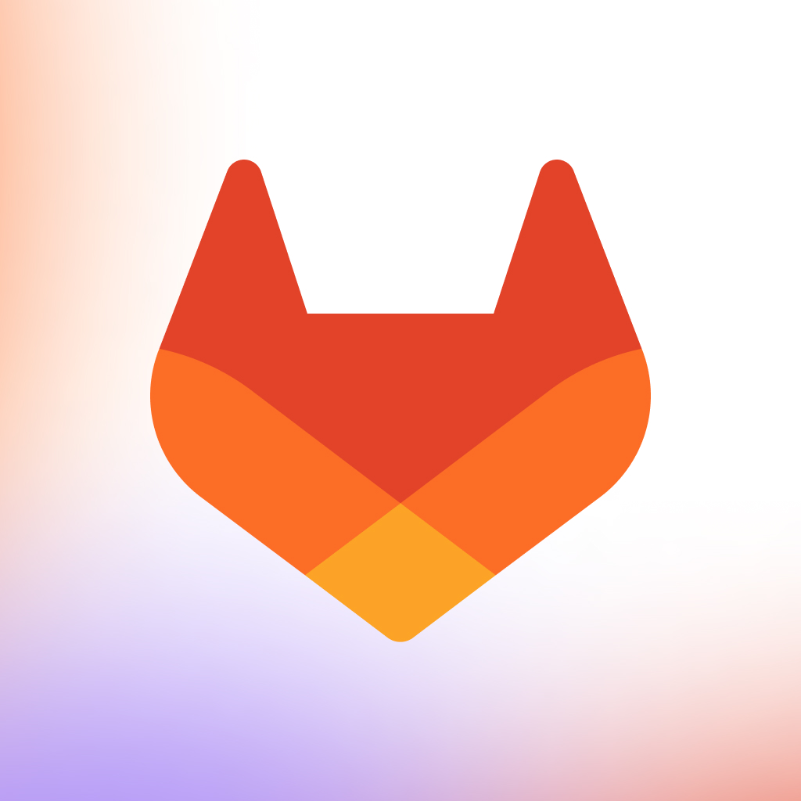

minitalk: Converting messages to binary

In one of my favorite coding projects (at the time of writing), I felt like a detective trying to decrypt secret messages. Or like a soldier in the second world war writing down messages I heard in morse. I hope you get the idea.
About minitalk
The goal of the project is to create a server that is able to receive and show messages from a client that you also created, using only 2 UNIX signals. Because of this constraint, you will need to make system that can convert the characters you want to send to a binary signal, as well as be able to construct the signal back into the character.
What I learned
I didn't need much code in the end, however during the making of the project, I felt I had to be very precise, like a surgeon doing an operation on a patient. From this I learned how much you can achieve with just a few lines of code. Of course I also learned how to use and implement UNIX signals and exploring the limits of them, since they aren't really meant what I was trying to achieve. It almost made me see another dimension, which was nice to experience.
Code
The code for this project you can find in the repository linked below. There you can also find the instructions for how to run the code. Have fun!
Despite having validated this project at école 42, I would still highly value any feedback that you might have. Please let me know :-)
